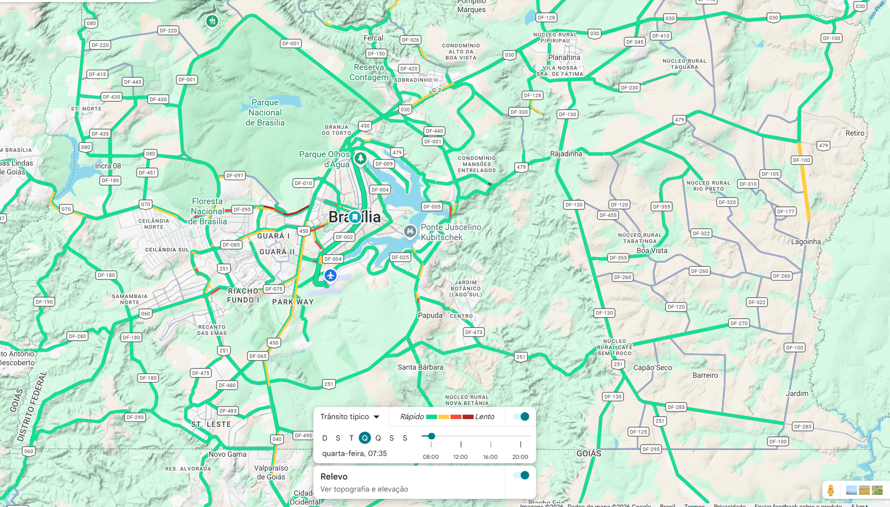
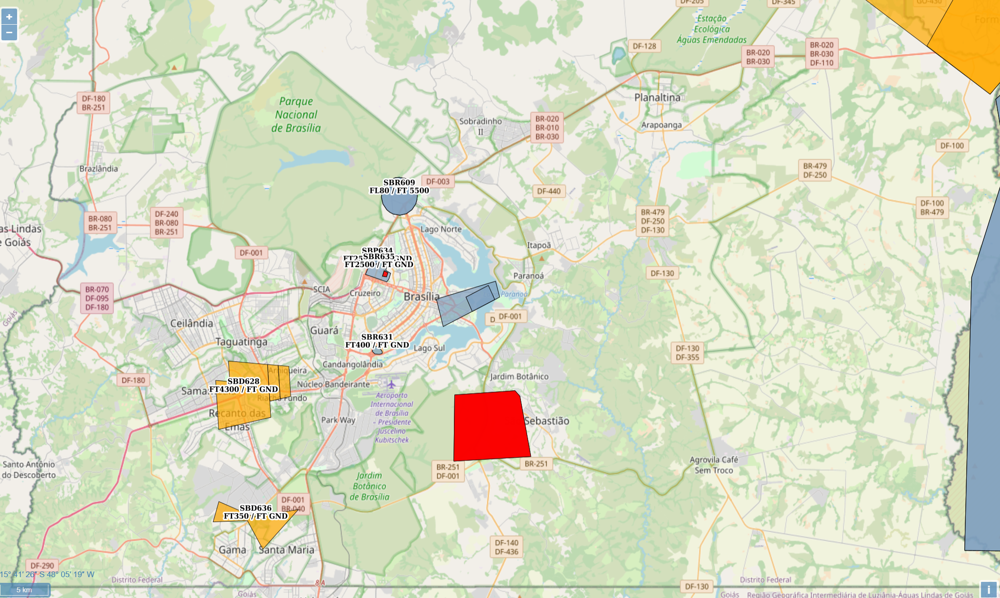
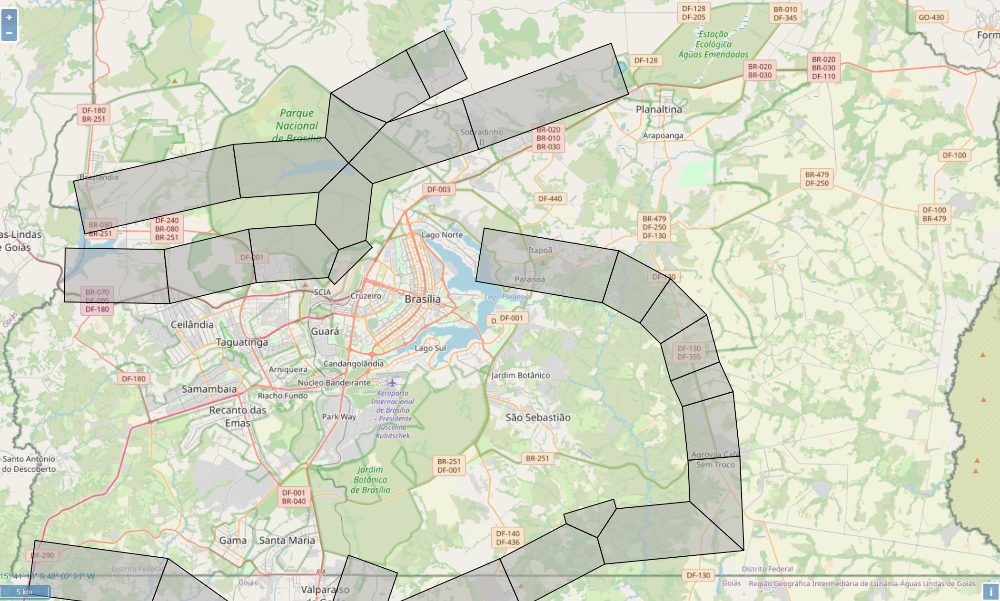

Análises
Esta seção apresenta os resultados preliminares das análises realizadas no âmbito do estudo sobre o potencial de implantação de sistemas de Urban Air Mobility (UAM).
Seleção da cidade
A metodologia deste estudo iniciou-se com uma investigação sobre possíveis abordagens para estimativa de demanda para Urban Air Mobility (UAM). A literatura indica que variáveis como densidade populacional, atividade econômica, geração de viagens e concentração de polos urbanos são fatores relevantes para estimar o potencial de demanda desse tipo de serviço.
Durante a revisão bibliográfica foi identificado que muitos desses fatores também estão diretamente relacionados à demanda por operações de drones ou Unmanned Aircraft Systems (UAS). Dessa forma, partiu-se da hipótese de que existe uma correlação entre a distribuição espacial de operações de drones e o potencial de demanda para serviços de mobilidade aérea urbana.
Base de Dados Utilizada
Para investigar essa hipótese foi utilizada uma base de dados histórica de solicitações de voo de drones proveniente do sistema SARPAS, utilizado no Brasil para o registro e autorização de operações de aeronaves remotamente pilotadas.
A base analisada contém mais de 800 mil solicitações de voo registradas entre os anos de 2016 e 2022. Após esse período o sistema passou por alterações e os dados históricos deixaram de estar disponíveis publicamente.
Processamento dos Dados
A base de dados utilizada contém, entre outros atributos, as coordenadas geográficas (latitude e longitude) associadas às solicitações de voo. Esses dados foram processados utilizando o software de geoprocessamento QGIS, permitindo a realização de análises espaciais sobre a camada geográfica de municípios brasileiros.
A partir desse processamento foi possível avaliar a distribuição espacial das operações de drones no território nacional, identificando padrões de concentração que podem indicar regiões com maior potencial para desenvolvimento futuro de serviços de Urban Air Mobility.
Visualização dos Resultados
Os resultados preliminares dessa análise são apresentados no dashboard interativo a seguir, desenvolvido na plataforma Power BI. A visualização permite explorar a distribuição das solicitações de voo de drones e sua relação com diferentes regiões do país.
Estudo Preliminar de Brasília como Sítio para Vertiporto
Brasília pode ser considerada um caso preliminar promissor para implantação de um vertiporto voltado à mobilidade aérea avançada de passageiros, desde que a análise seja conduzida por uma abordagem multicritério. Em vez de justificar a escolha apenas pela proximidade física entre pontos estratégicos, o mais adequado é considerar simultaneamente fatores como centralidade urbana, relevância institucional, acessibilidade, sensibilidade do espaço aéreo, potencial de economia de tempo e possibilidade futura de integração com a infraestrutura aeroportuária e urbana existente (ANAC, 2022; MERCAN et al., 2025).
No contexto desta pesquisa, propõe-se uma rede inicial com três pontos: o Aeroporto Internacional de Brasília, como ponto obrigatório de conexão; um segundo ponto em área próxima ao centro governamental, preferencialmente fora da região mais sensível da Esplanada dos Ministérios; e um terceiro ponto em área central de uso cotidiano, com vocação comercial e intermodal. Essa lógica permite estruturar uma rede com função aeroportuária, institucional e urbana, aproximando-se dos critérios de localização de vertiportos discutidos na literatura recente (MERCAN et al., 2025; RIBEIRO et al., 2023).
A justificativa de demanda, nesta etapa, deve ser tratada como demanda potencial e não como demanda comprovada. Para um serviço eVTOL de passageiros, a literatura mostra que a atratividade inicial tende a se concentrar em usuários com maior sensibilidade ao tempo, maior disposição a pagar e necessidade de deslocamentos previsíveis. Assim, para Brasília, a hipótese mais consistente é a de uso inicial por perfis ligados a compromissos institucionais, atividades corporativas e conexões aeroportuárias, e não por mobilidade massificada desde o início (ASMER et al., 2025).
Por outro lado, a escolha de Brasília também apresenta limitações importantes, principalmente relacionadas às restrições do espaço aéreo em áreas sensíveis. A ICA 100-40 estabelece cuidados especiais em áreas de segurança e inclui entre seus exemplos as sedes de governos, além de prever a necessidade de observância de Flight Restriction Zones (FRZ) e de outros condicionamentos operacionais. O eAIP Brasil define formalmente os espaços aéreos condicionados, como áreas proibidas, restritas e perigosas, que devem ser considerados no planejamento operacional (DECEA, 2023; DECEA, 2026a).
Esse ponto é particularmente relevante para Brasília, pois a proximidade com áreas governamentais estratégicas representa, ao mesmo tempo, uma vantagem de mercado e uma restrição técnica. Em termos de decisão locacional, isso sugere que a proposta de vertiporto não deve priorizar a implantação direta sobre a Esplanada dos Ministérios, mas sim áreas próximas com menor conflito potencial com exigências de segurança e gestão do espaço aéreo.
Justificativa de Demanda e Seleção do Estudo de Caso
A escolha de Brasília como estudo de caso para análise preliminar de mobilidade aérea urbana (UAM) pode ser sustentada por um conjunto de indicadores socioeconômicos, urbanos e de mobilidade. Esses indicadores permitem justificar a existência de uma demanda potencial para serviços de transporte aéreo urbano baseados em eVTOL, especialmente em um contexto inicial de adoção voltado a usuários com maior sensibilidade ao tempo e maior capacidade de pagamento.
O quadro a seguir apresenta um resumo dos principais indicadores utilizados para sustentar essa hipótese de demanda potencial.
Quadro – Indicadores para Justificativa de Demanda Potencial
| Indicador | Variável analisada | Valor | Justificativa para UAM |
|---|---|---|---|
| Hub aeroportuário | Passageiros em conexão no Aeroporto de Brasília | Mais de 40% | Indica massa relevante de usuários que já passam pelo aeroporto e podem demandar conexão rápida com a cidade. |
| Capacidade de pagamento | PIB per capita de Brasília | R$ 129.790,44 | Sustenta a hipótese de adoção inicial de um serviço premium, como eVTOL de passageiros. |
| Desenvolvimento urbano | IDHM de Brasília | 0,824 | Reforça o perfil socioeconômico compatível com serviços de maior valor agregado. |
| Base potencial de usuários | População estimada do Distrito Federal | 2.996.899 habitantes | Indica massa urbana suficiente para estudo de demanda potencial. |
| Valor do tempo | Congestionamento médio em Brasília (2025) | 34,4% | Ajuda a justificar o eVTOL como alternativa para reduzir incerteza e atraso em deslocamentos estratégicos. |
| Perda de tempo no trânsito | Horas perdidas por ano | 58 h/ano | Reforça a relevância de um modo de transporte com maior previsibilidade temporal. |
| Massa crítica em rota mais longa | População urbana de Taguatinga | 210.498 habitantes | Sugere um polo urbano mais distante e populoso, potencialmente adequado para cenários alternativos de rede. |
| Massa crítica em rota mais longa | População urbana de Ceilândia | 350.347 habitantes | Indica polo de alta densidade populacional, útil para testar cenários de demanda mais robustos. |
A análise desses indicadores sugere que Brasília reúne características relevantes para exploração de cenários de mobilidade aérea urbana, especialmente considerando seu perfil institucional, nível de renda elevado e concentração de deslocamentos relacionados a atividades governamentais e corporativas.
Caracterização de Brasília
Brasília, capital federal do Brasil, é uma cidade singular tanto do ponto de vista urbanístico quanto do ponto de vista da mobilidade. Planejada e construída entre 1956 e 1960 sob o projeto de Lúcio Costa e Oscar Niemeyer, ela foi concebida inteiramente para o automóvel, com eixos viários de alta velocidade, ausência de cruzamentos em nível no Plano Piloto e separação funcional rígida entre zonas residenciais, comerciais e governamentais. Essa lógica original torna Brasília um caso especialmente relevante para o estudo de novas soluções de mobilidade urbana.
Esta seção apresenta os principais aspectos que caracterizam a cidade e seu território, com o objetivo de contextualizar os desafios e as oportunidades para a implantação de sistemas de Mobilidade Aérea Avançada (UAM). São abordados a estrutura urbana e o traçado característico do Plano Piloto, a distribuição geográfica das regiões administrativas e cidades satélites, os principais polos geradores de viagens — como o Eixo Monumental, o Setor Bancário, o Setor Hoteleiro, o Aeroporto Internacional de Brasília e os grandes equipamentos públicos —, além das condições climáticas e meteorológicas que influenciam operações de aviação de baixa altitude.
Também são discutidas as características do sistema de transporte atual, incluindo o metrô, as linhas de BRT e o transporte individual motorizado, cujas limitações estruturais — especialmente nos deslocamentos entre o Plano Piloto e as regiões periféricas como Taguatinga, Ceilândia, Samambaia e Sobradinho — representam os principais gargalos de mobilidade que a UAM poderia complementar. Por fim, são considerados aspectos regulatórios e institucionais específicos do Distrito Federal, dada a presença de espaço aéreo restrito associado às instalações governamentais e militares, fator que torna Brasília um ambiente regulatório particularmente complexo para a operação de eVTOL.
Pressupostos Estratégicos
Este estudo adotou, como premissa principal, a análise de um vertiporto voltado ao transporte de passageiros, e não de carga ou atendimento médico/emergencial. A justificativa é que o recorte em passageiros se alinha melhor ao objetivo de avaliar mobilidade urbana, integração modal e economia de tempo entre regiões administrativas do Distrito Federal, o aeroporto e a área central do Plano Piloto. No campo regulatório, a própria ANAC trata os vertiportos como infraestrutura que deve ser integrada à estrutura urbana, à acessibilidade e aos demais modais de transporte, o que reforça a adequação de um estudo voltado à circulação de pessoas. Além disso, o Aeroporto Internacional de Brasília já opera como um nó importante de conexão, atendido por diversas linhas de ônibus regulares, o que favorece sua leitura como hub de articulação de uma futura rede aérea urbana.
A opção por não priorizar, nesta etapa, aplicações de carga e emergenciais decorre de um critério de aderência ao problema estudado. A carga responde a uma lógica logística própria, distinta da mobilidade pendular urbana. Já a operação emergencial exige critérios específicos de atendimento, prioridade operacional, infraestrutura e regulação, além de já estar historicamente associada a meios aéreos dedicados. Por isso, para uma seleção preliminar de sítios em Brasília, o enfoque em passageiros foi considerado o mais coerente e tecnicamente justificável.
Fontes: ANAC – Vertiportos; ANAC – Sandbox Vertiportos/eVTOLs; Aeroporto Internacional de Brasília – Transporte Público; Aeroporto Internacional de Brasília – Informações Úteis.
AHP para Seleção de Local de Vertiporto
O projeto considera a seleção de 3 localidades para implantação do Vertiporto. Considerando o Aeroporto Internacional de Brasília - SBBR um vertiporto natural, resta a seleção de mais 2 sitios para o conjunto de vertiportos, os quais serão selecionados pela metodologia AHP.
Pré Seleção de Vertiportos
Para garantir a variabilidade de opções, características e comportamentos foram pré-selecionados 2 alternativas no plano piloto e 2 alternativas nas RA.
A rodoviária foi considerando uma alternativa com alta conectividade.
O complexo 21 foi considerando uma demanda constante considerando eventos ao longo da semana e o perfil socioeconômico.
Ceilândia e Sobradinho foram escolhidos considerando localizações opostas entre si, maior volume populacional e potencial de ganho de tempo para deslocamento ao aeroporto ou plano piloto.
| Plano Piloto | RA |
|---|---|
| Rodoviária | Sobradinho |
| Complexo 21 | Ceilândia |
Sobradinho foi escolhido no eixo norte por combinar alta demanda pendular, forte dependência do sistema viário e posição estratégica intermediária, funcionando como hub regional dentro do DF capaz de captar fluxos de áreas mais distantes (como Planaltina) de forma mais eficiente.
Ceilândia foi selecionada no eixo oeste por apresentar forte geração de viagens, dependência relevante de transporte coletivo e melhor ganho de tempo em relação a Taguatinga, além de atuar como ponto de absorção regional para deslocamentos mais longos.
Planaltina não foi escolhida, apesar do alto potencial de economia de tempo, porque seu benefício se concentra mais na demanda local, enquanto Sobradinho oferece melhor lógica de rede como hub intermediário.
Taguatinga foi descartada pois, no modelo com hub no aeroporto, o ganho de tempo é baixo, tornando o deslocamento direto por carro mais competitivo e diminuindo a atratividade do vertiporto.
Considerações sobre acessibilidade e tempo de deslocamento
A acessibilidade foi analisada considerando dois destinos: Aeroporto Internacional de Brasília e Plano Piloto, pois o ganho de tempo varia significativamente entre eles.
O vertiporto é mais competitivo quando o destino é o aeroporto, especialmente para regiões mais distantes; já para o Plano Piloto, o benefício diminui devido à necessidade de transporte terrestre adicional após o pouso.
A análise considerou o contexto de congestionamento da cidade (34,4% em média), indicando que a atratividade do vertiporto é maior em corredores saturados e deslocamentos longos.
Assim, a seleção dos sítios levou em conta não só a distância, mas também o tempo total de viagem e a integração operacional da rede.
Distâncias e tempos com referência no aeroporto
Considerando o aeroporto como destino, regiões mais distantes apresentam maior potencial de economia de tempo, com destaque para Planaltina; Sobradinho aparece com ganho intermediário, relevante sobretudo em horários de pico.
No eixo oeste, Ceilândia tem vantagem sobre Taguatinga, pois enfrenta maior tempo terrestre até o aeroporto, tornando o trecho aéreo mais vantajoso; Taguatinga perde atratividade por ser mais próxima e melhor conectada.
Assim, os melhores sítios são aqueles que capturam deslocamentos longos e sujeitos a congestionamento.
Porém, a escolha não depende apenas da distância, mas também da capacidade do local de atrair fluxos de outras regiões e atuar como ponto estratégico dentro da rede.
Distâncias e tempos com referência no Plano Piloto
Com o Plano Piloto como destino, o ganho de tempo do vertiporto diminui, pois o passageiro ainda depende de transporte terrestre após o pouso no aeroporto.
Planaltina mantém vantagem por partir de deslocamentos terrestres mais longos; Sobradinho apresenta benefício moderado, especialmente no rush.
Ceilândia segue competitiva, embora com ganho reduzido, enquanto Taguatinga perde atratividade, já que o tempo total se aproxima do deslocamento direto por carro.
A análise evidenciou que o critério decisivo deve ser o tempo total origem–destino até o Plano Piloto, e não apenas a distância ao aeroporto, o que enfraqueceu Taguatinga e consolidou Ceilândia no eixo oeste.
Definição dos critérios
Foram selecionados 3 critérios principais para seleção do sítio: Conectividade, Tempo de Deslocamento e Restrições.
Para definir os 3 critérios principais foi realizado um brainstorm com o grupo elencando x critérios possíveis, e depois foi realizada uma votação, dessa forma os 3 critérios selecionados foram os que apresentaram maior quantidade de votos.
| Critério | Votos |
|---|---|
| Conectividade | 5 |
| Tempo de Deslocamento | 5 |
| Restrições | 3 |
| População | 2 |
| Ruído | 0 |
| Distância | 0 |
A fim de medir cada critério por alternativa, optou-se por utilizar métodos objetivos para quantificar tais atributos, desta forma o modelo fica mais consistente e robusto.
| Critério | Definição | Método de cálculo | Interpretação |
|---|---|---|---|
| Conectividade | Grau de integração dos modais e interligação a diversas localidades, de modo fácil e acessível. | Quantidade de modais a 10 min de distância caminhando. Para fins de distinção entre modais é considerado os seguintes pesos: Aéreo = 1, Metroviário = 2 e Rodoviário = 3.* | Quanto maior melhor. |
| Tempo de Deslocamento | Tempo de referência de deslocamento por modais "padrão" até o vertiporto natural - Aeroporto Internacional de Brasília.Tempo médio entre o sítio e o aeroporto na hora pico, considerando carro e transporte público. (em minutos) | Quanto maior melhor. | |
| Restrições | Limitações para operação devido à restrições legais, operacionais e/ou ambientais. | Quantidade de restrições em relação ao Espaço Aéreo, à municipalidade e ao meio ambiente. Cada restrição equivale a 1 ponto. | Quanto menor melhor. |
*pesos arbitrados levando em consideração análises como capacidade, flexibilida, custo, capilaridade, tempo e escala.
1. Dados de Entrada
| Alternativa | Conectividade | Tempo | Restrições |
|---|---|---|---|
| A | 8 | 33.5 | 2 |
| B | 4 | 37 | 2 |
| C | 6 | 71.5 | 0 |
| D | 5 | 61 | 1 |
2. Normalização
Fórmulas
Conectividade = valor / máximo
Tempo = valor / máximo
Restrições = 1 / (1 + restrições)
| Alt | Conectividade | Tempo | Restrições |
|---|---|---|---|
| A | 1.000 | 0.469 | 0.333 |
| B | 0.500 | 0.517 | 0.333 |
| C | 0.750 | 1.000 | 1.000 |
| D | 0.625 | 0.853 | 0.500 |
3. Matriz AHP
| C | T | R | |
|---|---|---|---|
| C | 1 | 0.333 | 5 |
| T | 3 | 1 | 7 |
| R | 0.2 | 0.143 | 1 |
Pesos Calculados
| Critério | Peso |
|---|---|
| Conectividade | 0.283 |
| Tempo | 0.643 |
| Restrições | 0.074 |
Consistência: CR = 0.056 (Aceitável)
4. Cálculo do Score
Score = (C × 0.283) + (T × 0.643) + (R × 0.074)
| Alt | Cálculo | Score |
|---|---|---|
| A | (1×0.283)+(0.469×0.643)+(0.333×0.074) | 0.609 |
| B | (0.5×0.283)+(0.517×0.643)+(0.333×0.074) | 0.498 |
| C | (0.75×0.283)+(1×0.643)+(1×0.074) | 0.929 |
| D | (0.625×0.283)+(0.853×0.643)+(0.5×0.074) | 0.762 |
5. Ranking Final
| Posição | Alternativa | Score |
|---|---|---|
| 1º | C - Sobradinho | 0.929 |
| 2º | D - Ceilândia | 0.762 |
| 3º | A - Rodoviária | 0.609 |
| 4º | B - Complexo 21 | 0.498 |
6. Análise de Sensibilidade
Sensibilidade Marginal
| Alt | dScore/dC | dScore/dT | dScore/dR |
|---|---|---|---|
| A | 1.000 | 0.469 | 0.333 |
| B | 0.500 | 0.517 | 0.333 |
| C | 0.750 | 1.000 | 1.000 |
| D | 0.625 | 0.853 | 0.500 |
Impacto de +1% no Peso do Tempo
| Alt | ΔScore |
|---|---|
| A | +0.0047 |
| B | +0.0052 |
| C | +0.0100 |
| D | +0.0085 |
Interpretação: A alternativa C é a mais sensível ao critério tempo, o que explica sua robustez no ranking.
7. Conclusão
A alternativa C (Sobradinho) apresenta desempenho superior em todos os cenários analisados, com alta robustez devido à dominância nos critérios de tempo e restrições.
O trade-off principal do modelo ocorre entre as alternativas A (conectividade) e D (tempo), evidenciando o impacto estratégico da definição de pesos.
AHP Interativo - Análise de Sensibilidade
Ajuste de Pesos
Soma dos pesos: 1.00
Resultados
| Alternativa | Score |
|---|
Gráfico de Ranking
Carregando...





Necessidades energéticas de vertiportos em Sobradinho e Ceilândia
Previamente à obtenção de dados de demanda, tráfego, operações/dia, número de aeronaves, tempo/consumo de recarga e infra energética do vertiporto, pode-se fazer a premissa inicial: o vertiporto da RA terá 2 TLOF/FATO/Safety + 2 Stands, por questão de módulo de redundância mínimo - denominado na literatura de ‘2-pad vertiport’, conforme diagrama elétrico mostrado na figura a seguir.

Considerando as 2 posições de recarga rápida (150 - 200 kWh/recarga, 15 - 25 min ‘turnaround’) tem-se, no horário de pico, 1,4 - 2 MW na recarga (depende do número de voos e de recargas, no caso, 6). Incluindo o consumo energético da infra, iluminação, HVAC, sistemas e operações, tem-se um total de 2 - 2.5 MW, para o que se dimensiona um transformador de 2.5 a 3 MVA (depende do fator de potência), seguido de conversor e chave de proteção para a entrada da concessionária em 13,8 kV. Notar que esta configuração inclui, como opcionais, reservas locais de baterias e painéis solares, o que reduz o gasto com a concessionária e torna o vertiporto mais ambientalmente sustentável. No Brasil, esta infraestrutura pode representar um investimento de R$ 2 - 3 milhões e um consumo médio diário de 3 MWh, enquanto os 2 carregadores (da ordem de 1 MW cada), adicionam investimento da ordem de R$ 2 milhões.
A concessionária de distribuição no DF é a Neoenergia DF. A carga total disponível hoje para o DF está em torno de 1.000 MW. Um vertiporto de 2 - 2,5 MW deve poder ser atendido sem maior dificuldade, podendo exigir reforço local em 13,8 kV, o que pode custar de R$ 200 - 400 mil/Km, em Sobradinho. Como Ceilândia possui maior densidade de centros de distribuição (N, S, Centro), a distância provável e o custo devem ser bem menores.
Fontes: Neoenergia, ANEEL, Relatórios UNESP Eng. de Energia; NIA-NASA Urban Air Mobility Electric Infrastructure Study; FAA/NREL Vertiport Electrical Infrastructure Study; NASA Analysis of Electrical Grid Capacity by Interconnection for Urban Air Mobility.
Em desenvolvimento
Esta seção será expandida com mapas, gráficos e resultados detalhados das análises espaciais e estimativas de demanda realizadas ao longo do projeto.